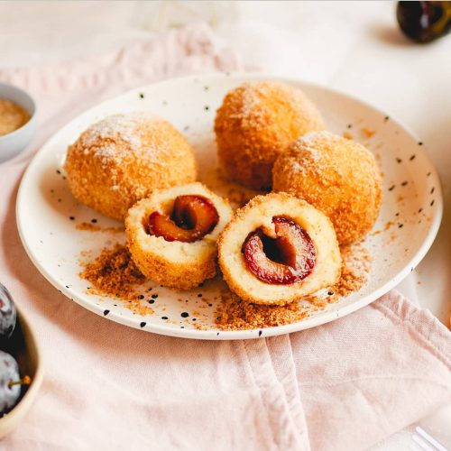

Szilvás gombóc
A nyár megunhatatlan és kihagyhatatlan fogása a hagyományos szilvás gombóc. Ebből a tapasztalatom szerint nem lehet eleget készíteni. Teljesen mindegy hány kg krumplival állok neki, a család tutira nem akad ki, hogy jaj túl sok lett.
Csakis C típusú, öreg krumplit szabad venni hozzá. Ha olyan újkrumplit veszel hozzá, aminek még pereg le a héja. Annak magasabb a víztartalma és ezért nem jó. – Puhára kell főzni a krumplit és nagyon ügyelni rá, hogy ne főjjön szét.
| Elkészítési idő | Hűtés | Összesen |
|---|---|---|
| 60 perc | 10 perc várakozás | 1 óra 10 perc |

Hozzávalók
- 50 dkg kekszmorzsa
- 2 evőkanál cukrozatlan kakaópor
- 1 csomag vaníliás cukor
- 20 dkg porcukor
- 20 dkg vaj
- 2 dl tej
- 20 csepp rumaroma
- 20 dkg kókuszreszelék
Elkészítés
- A szilvás gombóc elkészítéséhez a szilvákat félbevágjuk, és mindegyik közepébe teszünk egy kiskanál fahéjas porcukrot a mag helyére.
- A megtisztított krumplit kockára vágjuk, puhára főzzük sós vízben, majd jól lecsepegtetjük. Gyúródeszkára borítjuk és még melegen összetörjük, majd hagyjuk teljesen kihűlni.
- Ezután megszórjuk liszttel és hozzáadjuk a tojássárgáját és a zsírt. Összegyúrjuk, és ha kell még liszt, szórunk hozzá egy keveset (csak annyit, hogy a tészta összeálljon).
- Egy deszkát belisztezünk, a tésztát kettéválasztjuk. Először csak a felét nyújtjuk ki, mert így könnyebb vele bánni. Közben egy nagy fazékban felteszünk vizet forrni.